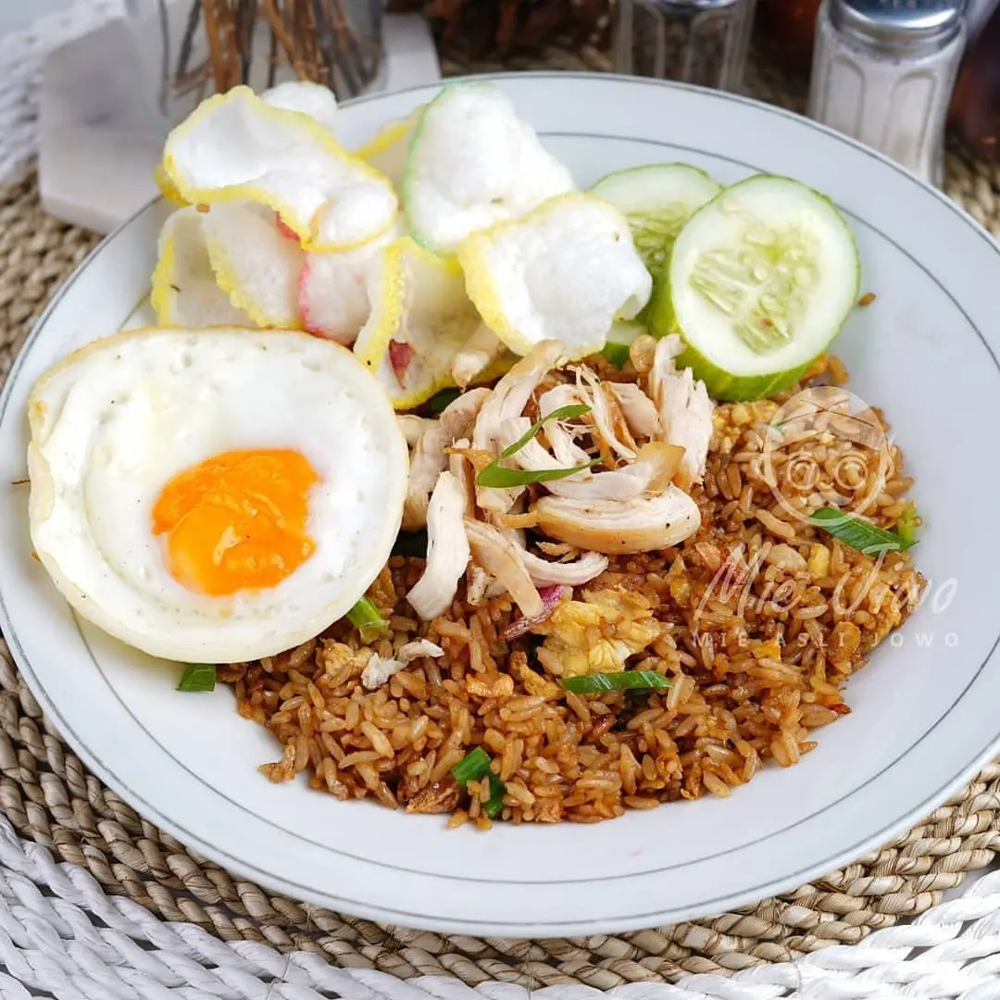

Resep 1: Nasi Goreng

Nasi goreng adalah makanan berupa nasi yang digoreng dan dicampur dalam minyak goreng, margarin, atau mentega. Biasanya ditambah dengan kecap manis, bawang merah, bawang putih, asam jawa, lada dan bahan lainnya; seperti telur, daging ayam, dan kerupuk.
Lihat Resep
Resep 3: Rawon

Rawon adalah sebuah hidangan tradisional Indonesia yang terkenal, terutama di daerah Jawa Timur. Hidangan ini merupakan semacam sup berwarna hitam pekat yang memiliki rasa yang khas dan kaya rempah. Bahan utama dari rawon adalah daging sapi, terutama bagian daging sapi yang empuk seperti tengkleng atau iga. Keunikan warna hitam pada rawon berasal dari penggunaan bumbu khas yang disebut "kluwek" atau "keluak."
Lihat Resep